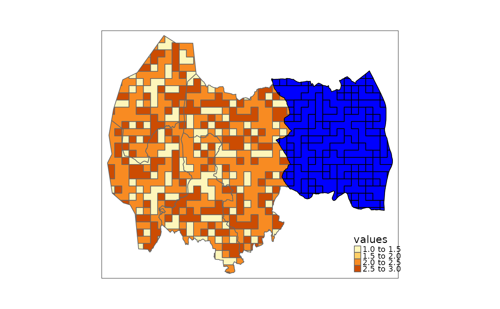
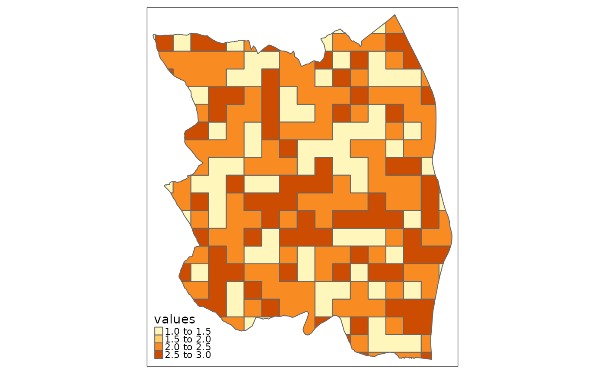

ea_homogeneous_area
ea_homogeneous_area.RdA function to create a new geometry based on two input geometries. The function is meant to precede ea_spread
and to define homogeneous area over which we can spread (i.e. aggregate) indicator values.
Usage
ea_homogeneous_area(
delineation1,
delineation2,
outline,
keep1 = NULL,
keep2 = NULL,
groups
)Arguments
- delineation1
A geometry (sf or stars object)
- delineation2
A second, optional, sf object, with the same crs as
delineation1.- outline
An optional sf object to mask out areas outside it.
- keep1
Column names in delineation1 to keep in the returned object. Only if delineation1 is an sf object.
- keep2
Column names in delineation2 to keep in the returned object.
- groups
If
delineation1is a stars object, select the attribute that designates the homogeneous areas class.
Value
The function returns an sf object with polygons defined by the intersection of delineation1, delineation2
and outline.
Delineation1 can be a raster (stars object), and will then be vectorised, and neighboring cells with identical values
will be merged.
Delineation1 and delineation2 should normally be completely overlapping, since areas not covered by both
layers will be dropped in the output.
An optional outline layer can be used to cut away areas, typically areas outside the accounting area.
Examples
data("ex_raster")
data("ex_polygons")
data("accounting_area")
# Example 1: two sf objects
ex1 <- ea_homogeneous_area(ex_polygons,
accounting_area,
keep1 = "condition_variable_2",
keep2 = "name")
#> Warning: attribute variables are assumed to be spatially constant throughout all geometries
#> Warning: repeating attributes for all sub-geometries for which they may not be constant
# Only the names given by `keep1` and `keep2` are retained:
names(ex1)
#> [1] "name" "condition_variable_2" "geometry"
# Example 2: One stars object and one sf object
ex2 <- ea_homogeneous_area(ex_raster,
accounting_area,
keep2 = "name",
groups = values)
#> Warning: repeating attributes for all sub-geometries for which they may not be constant
#> Warning: attribute variables are assumed to be spatially constant throughout all geometries
#> Warning: repeating attributes for all sub-geometries for which they may not be constant
tmap::tm_shape(ex2)+
tmap::tm_polygons(col = "values")+
tmap::tm_shape(ex2[ex2$name == "Enebakk",])+
tmap::tm_polygons(col = "blue", border.col = "black")

# Example 3: Example 2 + outline
enebakk <- accounting_area[accounting_area$name == "Enebakk",]
ex3 <- ea_homogeneous_area(ex_raster,
accounting_area,
enebakk,
keep2 = "name",
groups = values)
#> Warning: repeating attributes for all sub-geometries for which they may not be constant
#> Warning: attribute variables are assumed to be spatially constant throughout all geometries
#> Warning: repeating attributes for all sub-geometries for which they may not be constant
#> Warning: attribute variables are assumed to be spatially constant throughout all geometries
tmap::tm_shape(ex3)+
tmap::tm_polygons(col = "values")
